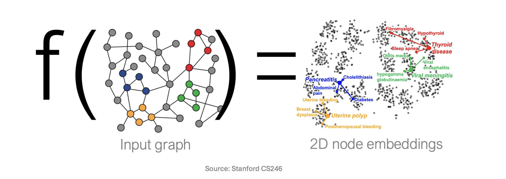
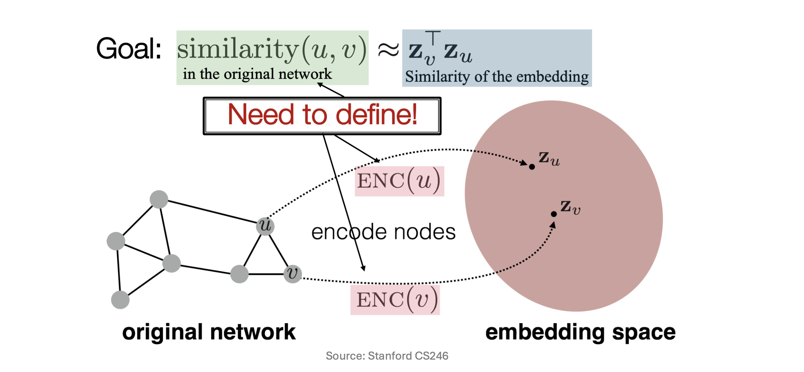
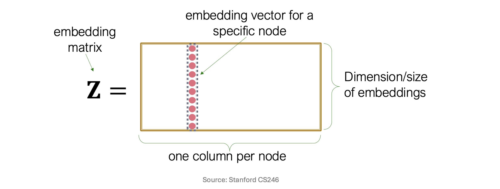
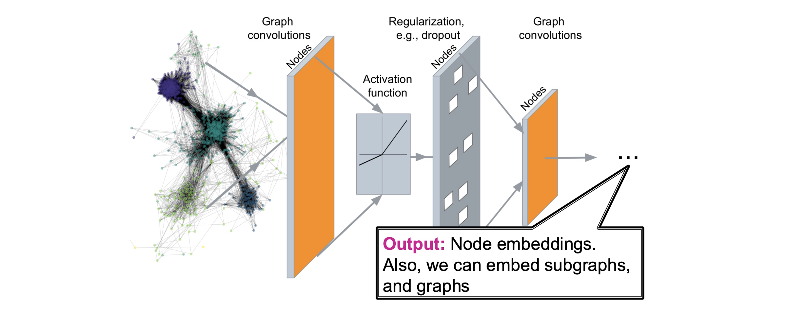
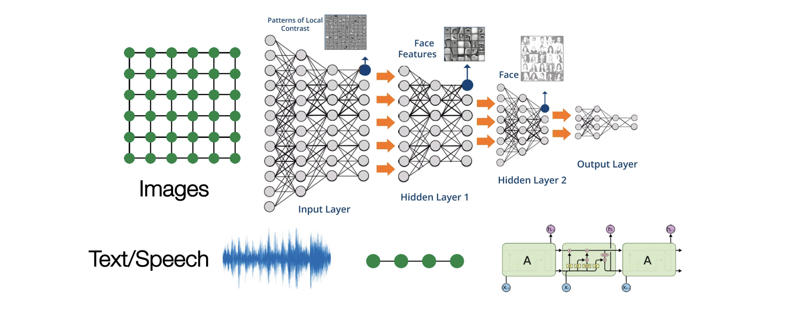
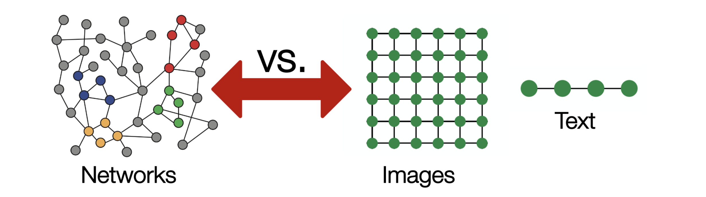

들어가며: 그래프 딥러닝의 필요성
그래프(Graph)는 노드(Node)와 간선(Edge)을 통해 엔티티 간의 복잡한 상호작용과 관계를 모델링하는 데 특화된 데이터 구조입니다. 과거의 기계학습 기법들은 네트워크의 위상(Topology)이나 노드의 통계적 특성을 사람이 직접 수동으로 추출(Hand-crafted features)하여 사용했습니다.
하지만 표현 학습(Representation Learning)의 패러다임이 그래프 데이터에 적용되면서, 그래프의 구조적 정보를 보존하는 임베딩(Embedding)을 신경망이 스스로 학습할 수 있게 되었습니다. 이번 포스트에서는 초기 그래프 임베딩 기법인 ’얕은 임베딩(Shallow Embeddings)’의 수학적 구조와 치명적인 한계점들을 짚어보고, 이를 극복하기 위해 등장한 그래프 신경망(Graph Neural Networks, GNN) 기반의 깊은 인코더(Deep Graph Encoders) 개념을 논리적 흐름에 따라 상세히 다룹니다.
1. 그래프 표현 학습 복습 (Recap: Graph Representation Learning)
1.1 노드 임베딩의 핵심 목표
그래프 표현 학습의 가장 근본적인 목표는 원본 네트워크 상에서 노드들이 가지고 있는 구조적 특성과 위상적 유사성(Structural properties)을 보존하면서, 이를 저차원 벡터 공간(Embedding Space)으로 매핑(Mapping)하는 것입니다.
함수 \(f\)를 통해 원본 그래프를 입력받아 각 노드의 2D 혹은 고차원의 임베딩 벡터를 출력하게 되며, 이 공간 안에서는 비슷한 구조적 역할을 하거나 서로 밀접하게 연결된 노드들이 기하학적으로 가깝게 위치하게 됩니다.

1.2 인코더와 유사도 함수 (Encoder & Similarity Function)
- 노드 임베딩을 수학적으로 정립하기 위해, 노드 \(u\)와 \(v\) 간의 관계를 수식화할 필요가 있습니다. 그래프 표현 학습은 다음의 핵심 수식을 만족하는 인코더 함수 \(\text{ENC}(\cdot)\)를 찾는 최적화 과정입니다.
\[ \text{similarity}(u, v) \approx \mathbf{z}_v^\top \mathbf{z}_u \]
- \(\text{similarity}(u, v)\): 원본 네트워크 상에서 두 노드 간의 구조적 유사도를 의미합니다. (예: 두 노드가 직접 연결되어 있는지, 공유하는 이웃 노드가 얼마나 많은지, 무작위 보행(Random Walk) 시 얼마나 자주 함께 방문되는지 등을 측정)
- \(\text{ENC}(u), \text{ENC}(v)\): 원본 그래프의 노드를 임베딩 공간으로 보내는 인코더 함수입니다.
- \(\mathbf{z}_u, \mathbf{z}_v\): 인코더를 통과하여 생성된 노드 \(u\)와 \(v\)의 \(d\)차원 잠재 벡터(Latent vector)입니다. 즉, \(\mathbf{z}_u = \text{ENC}(u)\) 입니다.
- \(\mathbf{z}_v^\top \mathbf{z}_u\): 임베딩 공간 상에서 두 벡터의 내적(Dot product)입니다. 벡터 간의 코사인 유사도 혹은 거리에 비례하는 값으로, 임베딩 공간에서의 유사도를 나타냅니다.

2. 얕은 임베딩의 구조와 한계 (Shallow Embeddings and Limitations)
- DeepWalk, Node2vec, LINE과 같은 1세대 그래프 임베딩 기법들은 매우 직관적이고 단순한 얕은 임베딩(Shallow Embeddings) 구조를 채택했습니다.
2.1 얕은 인코더의 수학적 정의
- 얕은 인코더에서 함수 \(\text{ENC}(v)\)는 단순히 임베딩 행렬(Embedding Matrix)에서 해당 노드에 대응하는 열(Column)을 조회(Look-up)하는 방식으로 작동합니다. 전체 노드 집합을 \(V\)라 하고, 우리가 원하는 임베딩의 차원을 \(d\)라고 할 때, 임베딩 행렬 \(\mathbf{Z}\)는 다음과 같이 정의됩니다.
\[ \mathbf{Z} \in \mathbb{R}^{d \times |V|} \]
- 특정 노드 \(v\)의 임베딩 벡터 \(\mathbf{z}_v\)는 임베딩 행렬 \(\mathbf{Z}\)와 지시 벡터(Indicator vector) \(\mathbf{v} \in \{0, 1\}^{|V|}\) 의 행렬 곱으로 산출됩니다. (여기서 지시 벡터 \(\mathbf{v}\)는 노드 \(v\)의 인덱스 위치만 1이고 나머지는 0인 원-핫 인코딩 벡터입니다.)
\[ \text{ENC}(v) = \mathbf{z}_v = \mathbf{Z} \mathbf{v} \]

2.2 얕은 인코더의 3가지 치명적 한계
이러한 단순 행렬 룩업 방식은 직관적이지만, 실제 대규모/동적 그래프에 적용할 때 다음과 같은 명확한 한계를 지닙니다.
- 매개변수 효율성 부족 (Limitation 1: \(O(|V|d)\) parameters are needed)
- 파라미터 비공유(No sharing of parameters): 노드들 사이에 가중치를 공유하는 메커니즘이 전혀 없습니다.
- 모든 노드가 자신만의 고유한 임베딩 벡터(열)를 독립적으로 학습해야 하므로, 그래프의 노드 수 \(|V|\)가 수백만~수십억 개로 증가하면 학습해야 할 행렬 \(\mathbf{Z}\)의 크기도 선형적으로 폭발하여 메모리 초과 현상이 발생합니다.
- 본질적인 변환적 학습의 한계 (Limitation 2: Inherently “transductive”)
- 행렬 \(\mathbf{Z}\)의 크기와 구조는 모델이 훈련되는 시점의 노드 집합에 완전히 고정됩니다.
- 학습 시점에 존재하지 않았던 완전히 새로운 노드(Unseen nodes)가 네트워크에 추가될 경우, 이 노드에 대한 임베딩을 즉각적으로 생성해내는 추론(Inductive inference)이 불가능합니다. 새로운 노드를 반영하려면 \(\mathbf{Z}\)에 새로운 열을 추가하고 전체 모델을 다시 학습해야만 합니다.
- 노드 특성(Features) 활용 불가 (Limitation 3: Do not incorporate node features)
- 현실의 네트워크(예: 소셜 네트워크의 사용자 프로필 텍스트, 분자 구조 내 원자의 화학적 성질 등)에서 각 노드는 매우 풍부한 고유 특성(Features) 데이터를 가집니다.
- 하지만 얕은 임베딩은 오직 연결 구조(Topology) 정보만을 사용하여 \(\mathbf{Z}\) 행렬을 업데이트할 뿐, 노드가 원래 가지고 있는 특성 행렬(Feature Matrix)를 임베딩 생성 과정에 결합할 수 있는 구조적 방법론이 부재합니다.
3. 깊은 그래프 인코더의 도입 (Deep Graph Encoders)
- 앞서 언급한 얕은 임베딩의 3가지 한계를 근본적으로 해결하기 위해, 입력 그래프의 위상 구조와 노드의 특성을 모두 입력받아 복잡한 함수 근사를 수행하는 깊은 그래프 인코더(Deep Graph Encoders)가 제안되었습니다. 이것이 바로 그래프 신경망(GNN)의 뼈대가 됩니다.
3.1 새로운 인코더의 수학적 정의
이제 그래프 \(G=(A, X)\)가 주어졌다고 가정해 봅시다.
인접 행렬 (Adjacency Matrix) \(A\): \(A \in \mathbb{R}^{|V| \times |V|}\) (노드 간의 연결 여부나 가중치를 나타내는 행렬)
노드 특성 행렬 (Feature Matrix) \(X\): \(X \in \mathbb{R}^{|V| \times d_{in}}\) (노드 자체의 속성값, 예를 들어 유저 프로필이나 이미지 피처 등을 나타냄)
우리가 설계할 새로운 깊은 인코더 \(f_\theta\)는 학습 가능한 파라미터 \(\theta\)의 집합으로 구성된 신경망이며, 구조 정보 \(A\)와 특성 정보 \(X\)를 동시에 고려하여 최종 잠재 표현 행렬 \(H\)를 만들어냅니다.
\[ H = f_\theta(A, X) \quad \text{where } H \in \mathbb{R}^{|V| \times d} \]
- 즉, 특정 노드 \(v\)에 대한 인코딩은 더 이상 단순한 행렬 조회가 아니라, 노드 \(v\)의 속성값과 주변 이웃들의 구조적 정보를 조합한 다층적인 연산의 결과물이 됩니다.
3.2 GNN 파이프라인과 딥러닝 아키텍처
- 깊은 인코더는 여러 층의 그래프 합성곱 계층(Graph Convolutions Layer)을 쌓아 올린 형태를 취합니다.

- 깊은 인코더가 기존 한계를 해결하는 메커니즘:
- 파라미터 공유 및 효율성: 모든 노드가 고유한 벡터를 가지는 대신, 이웃의 정보를 집계(Aggregation)하고 변환하는 ’가중치 행렬 \(\theta\)’를 공유합니다. 따라서 파라미터 수가 노드 수 \(|V|\)에 의존하지 않고 특성 차원에만 의존하므로 메모리 효율이 극대화됩니다.
- 귀납적 추론(Inductive Capability): 학습된 모델 \(f_\theta\)는 정보를 모으는 ’규칙’을 학습한 것입니다. 따라서 새로운 노드가 추가되더라도, 그 노드의 주변 이웃 구조(\(A\)의 일부)와 고유 특성(\(X\))만 입력하면 즉각적으로 새로운 임베딩을 연산해낼 수 있습니다.
- 다양한 정보의 융합: 식 \(f_\theta(A, X)\)에서 명시되어 있듯, 노드가 원래 가지는 텍스트/이미지 특성 정보가 그래프 구조 정보와 함께 다층 신경망(Multi-layer Neural Network)을 통해 유기적으로 결합됩니다.
4. 그래프 데이터 머신러닝의 본질적 어려움
- 딥러닝 기술, 특히 CNN(합성곱 신경망)과 RNN(순환 신경망)은 이미지 처리나 자연어 처리에서 눈부신 성과를 이루었습니다. 이들은 데이터의 구조가 일정하다는 강력한 귀납적 편향(Inductive Bias)을 활용합니다.

- 하지만 위 그림과 같은 정형화된 데이터와 달리, 그래프 네트워크(Networks)에 기존의 딥러닝 도구를 그대로 가져다 쓰는 것은 불가능에 가깝습니다.

- 그래프 데이터 모델링이 어려운 근본적 이유 (Why is it Hard?):
- 임의의 크기와 복잡한 위상 구조 (Arbitrary size and complex topological structure):
- 이미지는 모든 내부 픽셀이 8개의 인접 픽셀을 가지며, 텍스트는 앞뒤로 1개씩의 인접 단어를 가집니다.
- 반면 그래프의 각 노드는 차수(Degree)가 1개일 수도, 10,000개일 수도 있습니다. 매우 이질적인 연결망 구조를 가지므로 고정된 크기의 필터를 씌울 수 없습니다.
- 노드 순서 및 고정된 기준점의 부재 (No fixed node ordering or reference point):
- 이미지는 보통 ’좌측 상단 픽셀’이라는 기준점이 있고 텍스트는 ’첫 단어’가 있습니다. 그래프 공간에서는 기준점(Reference point)이 존재하지 않으며 위, 아래, 왼쪽, 오른쪽이라는 방향성도 없습니다.
- 동형 그래프(Isomorphic Graphs)의 순열 불변성(Permutation Invariance):
- 노드 {1, 2, 3}으로 이루어진 그래프 \(G\)와, 같은 위상 구조를 가지지만 노드 이름을 {1, 3, 2}로 바꾼 그래프 \(G'\)는 사실상 완전히 동일한 정보입니다.
- 따라서 인접 행렬 \(A\)의 행과 열 순서가 뒤섞이더라도, 그래프 신경망은 “동일한 그래프”임을 인식하고 출력값을 일관되게 유지해야 하는(Permutation Invariant / Equivariant) 까다로운 수학적 조건을 만족하도록 설계되어야 합니다.
- 결론적으로, 이러한 그래프만의 복잡하고 불규칙적인 위상 특성을 다루기 위해 일반적인 합성곱(Convolution)을 일반화한 Graph Convolutions 연산이 필요하게 된 것입니다.